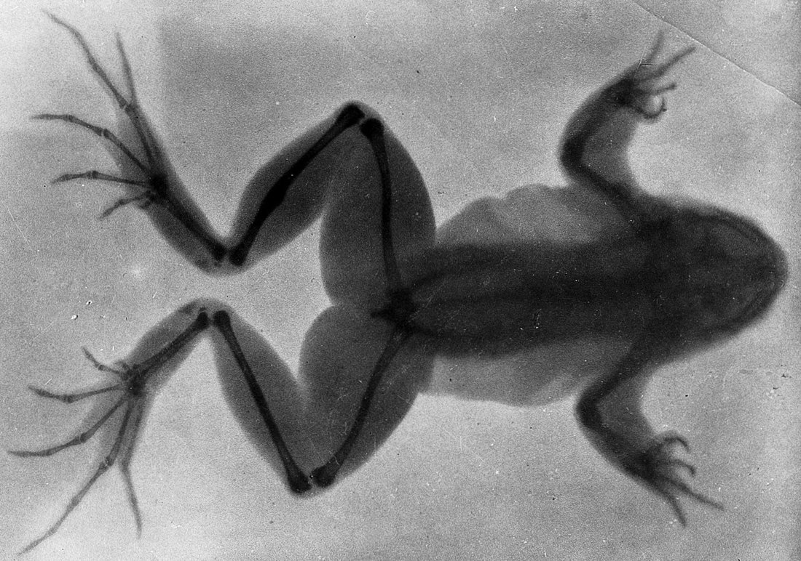

One more animal for my light box
You cracked the spoonbill case! My next film is a frog, X-rayed in 1896. See its outline? See the leg bones hidden inside?

Sort the frog in the forest
Put on your headset and help Dr. Reyes with real 3D frog parts.
Tap the box next to each step when you finish it.
- 🖥️Before you put on your headset
- Step 1 · Know what to findLook at the 8 parts you’ll find. In VR, each name starts with Frog Dissection. This list is also in VR: open your menu, click Assignments, then click our assignment.HeadFrog Dissection - HeadEyesFrog Dissection - Frog EyesUpper legFrog Dissection - Left Upper LegLower legFrog Dissection - Left Lower LegHeartFrog Dissection - HeartLungFrog Dissection - Left LungStomachFrog Dissection - Stomach & IntestinesBrainFrog Dissection - Brain
- 🥽In VR
- Step 2 · Go inPut on your headset and open the On-Demand app. Click the Explore tab and find Tranquil Forest. (Typing it in the Filter environments box finds it fast.) Click it, then click Begin Solo.
- Step 3 · Bring out all 8Press the top button on your right controller to open your menu. Click the Models tab. In the Filter models box, type Frog Dissection. Click each part to bring it out.✋ To move a part: grab it with the palm trigger (the button under your middle finger). Turn and move it with the thumbstick. Grab it with both palm triggers to make it bigger or smaller.
- Step 4 · Make two pilesMake an outside pile and an inside pile, with a big space between them. For each part, ask: could I see this on a frog sitting on a leaf?
- Step 5 · BonusVR onlyLine up your inside pile from top to bottom, in the order the parts sit inside a frog’s body. Brain at the top! Skip this step if you run out of time.
- Step 6 · Save (capture)Open your menu and click the Captures tab, then click Capture. Type a title, like your first name. For Class, pick our class (not No class (personal)). For Assignment, pick 11.01 VR · Inside or Outside? Click Save, then look for Submitted at the bottom of the menu.🔁 Want to fix something? Move the parts and save again. Your new capture takes the place of the old one.
- ✅After
- Step 7 · Tell me you’re doneClick Leave in the top right corner of your menu and take off your headset. In the Canvas assignment box, type VR option submitted and turn it in.
🛟Having trouble in VR?Steps with pictures, and a how-to video
How-to video: Completing Assignments in Optima On-Demand (2 minutes)
These pictures come from a space map. Your map will be Tranquil Forest, but the buttons are the same.
 1Explore tab
1Explore tabOn your dashboard, click the Explore tab. Scroll with the bar on the right, or type the map’s name in Filter environments.
 2Begin Solo
2Begin SoloClick the map, then click Begin Solo. Only a solo room (just you) can save your work.
 3Open your menu
3Open your menuPress the top button on your right controller. The menu tabs are Environments, Models, Assignments and Captures.
 4Read the assignment
4Read the assignmentClick Assignments, then click our assignment. What to build shows on the right.
 5Bring out the models
5Bring out the modelsClick Models. Type in the Filter models box to find the parts. Click a part to bring it out.
 6Move and resize
6Move and resizeGrab a part with the palm trigger. Turn and move it with the thumbstick. Use both palm triggers to make it bigger or smaller.
 7Capture
7CaptureWhen it looks right, open your menu, click Captures, then click Capture.
 8Pick the class and assignment
8Pick the class and assignmentType a title. For Class, pick our class, not No class (personal). For Assignment, pick ours. Click Save.
 9Check, then leave
9Check, then leaveLook for Submitted at the bottom of the menu. Then click Leave in the top right corner.
- All 8 parts are in your capture.
- Every part is in the right pile.
Gold X-ray Frog badge earned!
Only VR field assistants earn this one. Dr. Reyes will float through your forest scene to check your piles.
Sort the frog cards
- Drag each card into a tray. Or tap a card, then tap a tray.
- Ask: “Could I see this part from the outside?”
- Then write a paragraph that explains your thinking.
Write a paragraph (4 or 5 sentences)
Pick one outside part and one inside part of the frog. Tell what each part does to help the frog survive. Then explain how you knew which tray each part goes in.
- One outside part of a frog is ___. It helps the frog ___.
- One inside part of a frog is ___. Its job is to ___.
- I knew ___ was outside because ___.
- I knew ___ was inside because ___.
- All 8 cards are sorted.
- Your paragraph is at least 40 words and all 4 checks are lit.
How to turn it in: click the green button, choose Save as PDF, then upload that file to the Canvas assignment.